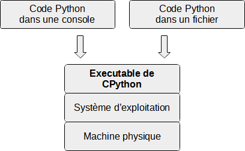

Spécification, implémentations et versions
Python est une spécification
Python est une spécification (on peut aussi dire norme ou standard), qui explique comment le langage doit fonctionner, toutes ses règles, et donc au final comment s’en servir pour écrire nos propres programmes. Apprendre à programmer en Python revient à apprendre sa spécification.
Cependant une spécification n’est au final qu’un ensemble de règles, ça n’est pas concret, pour pouvoir programmer en Python il faut utiliser des versions concrètes de la spécification, c’est à dire des programmes écrits spécifiquement dans le but de lire et exécuter des programmes Python. On appelle ces programmes des implémentations de Python.
Ces implémentations auront des caractéristiques différentes, des avantages et des inconvénients qui feront qu’elles correspondront mieux dans certaines situations (aucune n’étant parfaite), comme par exemple être compatible avec d’autres langages, être plus rapide, etc. Comme elles respectent (du mieux possible) le standard Python, cela facilite grandement la vie du développeur Python, qui peut utiliser son savoir et son expertise plus ou moins indépendamment de l’implémentation de Python utilisée. Elles ont quelques différences, qui sont permises tant qu’elles ne vont pas à l’encontre du standard de Python.
Les implémentations de la spécification Python
L’implémentation principale dite de référence est CPython. Elle s’appelle ainsi car elle programmée avec le langage C et est celle par défaut quand on parle de Python. C’est celle qu’on télécharge et qu’on installe depuis le site officiel de Python https://www.python.org/, et c’est de loin la plus utilisée, et que je conseille d’utiliser pour ce cours. Elle a les avantages suivants:
La plus à jour car c’est elle qui contient généralement les dernières évolutions du langage.
La mieux maintenue: elle est très stable, souvent corrigée pour les bugs.
Quelques autres versions (liste non exhaustive):
Jython: Python implémenté en Java. Cette implémentation peut être utilisée comme langage de script pour les applications Java ou pour créer des applications utilisant des bibliothèques Java. Elle est également souvent utilisée pour créer des tests de bibliothèques Java.
Python pour .NET: Cette implémentation utilise en fait l’implémentation CPython, mais c’est une application .NET et permet un accès aux bibliothèques .NET.
IronPython: Un autre Python pour .NET. Contrairement à Python.NET, il s’agit d’une implémentation Python complète qui génère du code intermédiaire (IL) .NET et compile le code Python directement en assemblages .NET. Il a été créé par Jim Hugunin, le programmeur à l’origine de Jython.
Lorsqu’on parle de Python, on fait normalement référence à la spécification. Si on veut parler de CPython, on doit le dire explicitement en utilisant le nom CPython et pas Python. Mais étant donné que CPython est l’implémentation par défaut, en pratique le terme Python inclut à la fois la spécification ainsi que CPython.
Fonctionnement de l'implémentation CPython
CPython est un programme exécutable qui fonctionne de la manière suivante:
CPython peut obtenir le code:
depuis un fichier, cela peut se faire de plusieurs façon:
par double-clic sur un fichier
.pysi le système d’exploitation est configuré pour ouvrir ce type de fichier avec l’exécutable Python. Une console sera ouverte si nécessaire pendant l’exécution, mais sera fermée automatiquement à la fin du programme, ce qui est problématique pour les programmes qui ont besoin d’une console car on n’aura pas le temps de lire les affichagespar la console avec la commande
python mon_fichier.pypar un autre programme qui va le faire pour nous indirectement
depuis la console en mode interactif, ce qu’on appelle l’interpréteur de commandes Python, c’est à dire en exécutant la commande
pythondans une console.
L’exécutable va utiliser les services du système d’exploitation pour effectuer les actions que le code Python souhaite réaliser pendant son exécution. Par exemple gérer la mémoire, gérer des fichiers, établir des connexions réseau, afficher des choses dans la console, demander du texte à l’utilisateur dans la console, gérer des éléments d’interface utilisateur (fenêtre, boutons…), …
Et enfin le système d’exploitation communique avec le matériel physique pour effectuer les actions.
Dans Windows, l’emplacement du fichier exécutable de CPython est spécifié au moment de l’installation, par défaut il devrait se situer dans C:\Program
Files\Python(version)\python.exe. Dans Linux et MacOS il y a plusieurs façons d’installer CPython, mais la version par défaut installée par le
système d’exploitation devrait être dans /usr/bin/python, cela dépend de nombreux facteurs, donc à vérifier.
Un langage qui évolue: les versions de Python
Python la spécification tout comme Cpython sont développés en continu (corrections de bugs et ajout de fonctionnalités) par de nombreuses personnes, dont l'équipe centrale la Python Software Foundation, qui coordonne tous les efforts de développement. C'est pour cela qu'il y a de nouvelles versions de Python qui sortent régulièrement.
Chaque version est de la forme 2.7.1, ou 3.9.2 par exemple.
le premier chiffre est la génération
le second la version majeure
le troisième la version mineure de correction de bugs. (spécifique à CPython)
La génération est une grande catégorie de versions majeures. La génération actuelle est la 3, la 2 étant vieille de plus de 10 ans et sur le point de devenir obsolète. Vous ne devez démarrer aucun nouveau projet de développement Python dans une version de génération 2, à moins d'avoir de bonnes raisons, telles que par exemple pour exécuter du code sur des vieilles machines sur lesquelles seul Python 2 est disponible, ou pour étendre un vieux programme de génération 2.
La version majeure marque, par rapport à la version précédente, l'apparition de nouvelles fonctionnalités, des changements, améliorations, et parfois des suppressions de fonctionnalités jugées obsolètes. Dans la grande majorité des cas, une mise à jour majeure de Python n'entraîne aucun problème pour tout programme Python qui a été développé pour la version majeure précédente (de même génération), mais il faut quand même bien lire les nouveautés de la nouvelle version avant de faire la mise à jour de Python. Parfois certaines précautions sont documentées et sont à prendre, au risque de voir des bugs apparaître dans vos programmes avec la nouvelle version majeure de Python. Le rythme de développement est typiquement une version majeure nouvelle tous les 1 à 2 ans.
La version mineure ne marque aucun ajout, modification ou suppression de fonctionnalité, mais apporte des corrections de bugs et vulnérabilités de sécurité, pour la version majeure correspondante. Vous pouvez donc faire la mise à jour de Python sans souci.
Chaque version majeure est officiellement supportée pour une certaine durée, en général quelques années, ce qui signifie qu'elle recevra des corrections de bugs par la sortie régulières de versions mineures. Passé ce délai, plus aucune version mineure ne sera développée.
En règle générale, on utilise la version la plus récente de Python, il faut donc faire une mise à jour quand c'est nécessaire. Ce cours porte sur la version de Python qui est précisée en haut de la barre de navigation. Les fonctionnalités de Python que ce cours couvre ont été introduites pour la majorité il y a longtemps, sans avoir besoin de la toute dernière version de Python pour en bénéficier.
Pour résumer
Python est une spécification dont l’implémentation principale est CPython qu’on utilise par défaut. D’autres implémentations existent mais sont utilisées dans des situations particulières. Les termes Python et CPython sont utilisés de façon interchangeable en pratique. Python évolue avec de nouvelles versions qui sortent régulièrement.